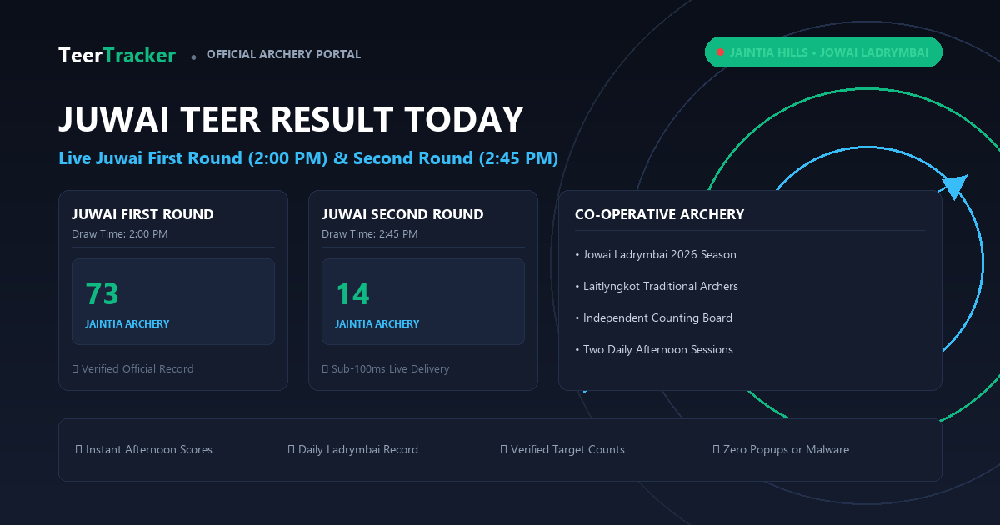

Juwai Morning Draw
F/R 10:30 AM • S/R 11:30 AM
F/R (10:30 AM)
29
S/R (11:30 AM)
81
12 Nov 2026 • Jaintia Hills Archery Range, Meghalaya
F/R 10:30 AM • S/R 11:30 AM
East Jaintia Hills Session
Verified daily winning numbers for First Round (2:30 PM) and Second Round (3:10 PM):
| Date | First Round (02:30 PM) | Second Round (03:10 PM) | Status |
|---|---|---|---|
| 07.11.2026 | 16 | 43 | Confirmed |
| 06.11.2026 | 88 | 02 | Confirmed |
| 05.11.2026 | 35 | 69 | Confirmed |
| 04.11.2026 | 42 | 17 | Confirmed |

Across the Jaintia and Khasi hills, archery enthusiasts follow both core Juwai rounds and affiliated regional sessions:
Juwai (officially spelled Jowai) is the headquarters of the West Jaintia Hills district in Meghalaya. The Pnar community hosts daily archery matches regulated under state amusement laws.
Key operational mechanics include:
Access full historical archives across all Meghalaya and Assam games on our Previous Results Archive.
Juwai Teer represents the archery traditions of the Pnar people across West Jaintia Hills and East Jaintia Hills in Meghalaya. Held within the picturesque hills surrounding Jowai town, this daily competition runs in the early afternoon, preceding the main Shillong evening draw.
The tournament operates under a registered co-operative archery society that coordinates with local village councils (Elakas) and licensed counters in Jowai, Ladrymbai, and Khliehriat. Local archers use handcrafted hazel and bamboo bows with feathered cane arrows, preserving centuries-old craftsmanship passed down across generations.
| Game / Location | First Round (FR) | Second Round (SR) | Regional District |
|---|---|---|---|
| Juwai Teer (Official) | 2:00 PM IST | 2:45 PM IST | West Jaintia Hills (Jowai) |
| Jowai Ladrymbai Arrow | 4:45 PM IST | 4:50 PM IST | East Jaintia Hills (Ladrymbai) |
| Laitlyngkot Range Match | 1:30 PM IST | 2:15 PM IST | Southern East Khasi Hills |
Juwai competitions feature 25 to 30 licensed tribal archers. Each shooter releases 30 arrows in the first round and 20 arrows in the second round toward a cylindrical straw target set 45 yards away.
When shooting concludes, referees pull the arrows from the target bundle and count them in groups of ten before registered counter agents. The final two digits of the count form the official Juwai winning score. If 673 arrows strike the target, the declared First Round number is 73.
Analysts calculate daily Juwai common numbers using the difference method:
While these analytical formulas offer structured reference numbers for hobbyists, outcomes remain entirely reliant on physical arrow counts conducted by official marshals.
All wagers must be placed through physically authorized counters licensed by Meghalaya taxation authorities. Counters close wagers exactly fifteen minutes before the first arrow release. Never transfer money to unauthorized WhatsApp or Facebook pages promising secret counter lists.
Round one announces at 2:30 PM IST, and round two announces at 3:10 PM IST, Monday through Saturday.
Yes. Ladrymbai is a coal-belt town in East Jaintia Hills that hosts regional companion draws closely tied to the Jaintia archery club network.
Review calculated daily formulas and house ending predictions on our Teer Common Numbers page.